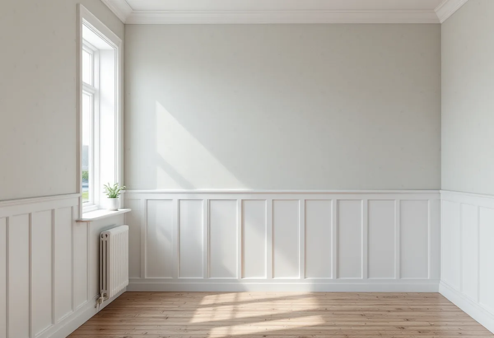
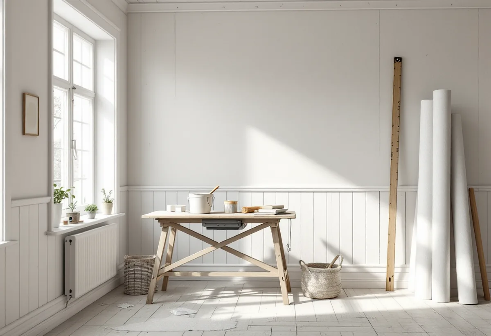

Platsbesök
Vi tittar på väggarna och frågar hur huset värms under vintern.
I Österåker har många sommarvillor och fritidshus blivit hus som används året runt, och då förändras också vad väggarna utsätts för. Geal Entreprenad AB tapetserar i villor och fritidshus i Österåker och väljer tapettyp efter hur huset värms och används.
Kommunens kulturmiljöprogram för Svinninge beskriver ett blandområde med permanent- och fritidsboende där åretruntboendet successivt ökat. När programmet skrevs var drygt 60 procent av fastigheterna bebodda året runt.
Bebyggelsen är blandad: lantbruksbebyggelse från 1700- och 1800-talet, sommarhus och egnahem från sekelskiftet, sportstugor och fritidshus från 1930–60-talet och nya permanentbostäder. Kring Nantes brygga uppfördes ett trettiotal grosshandlarvillor på stora tomter vid tiden kring sekelskiftet, och på 1930-talet styckades marken för fritidshus.

Svenska Byggnadsvårdsföreningen svarar på en fråga om vanliga, billiga tapeter i ett äldre hus. Om huset värms upp året runt är det inga problem med tätskikt på insidan. Däremot kan det bli problem om huset kallställs på vintern, eftersom fukt då kan anrikas bakom tätskiktet.
Frågan är alltså inte bara vilken tapet du tycker om, utan hur huset ska användas. Ett hus som nu värms hela året ger större frihet i tapetvalet. Ett hus som fortfarande stängs över vintern mår bäst av papperstapet. Är planen att flytta in permanent om några år kan det vara klokt att välja efter hur huset används i dag och byta senare.
Österåkers kommun skriver att varsamhetskravet gäller alla byggnader och alla ändringar, oberoende av husets ålder, och både invändigt och utvändigt. Karaktärsdrag och värden ska tas tillvara när huset ändras.
För tapetseringen betyder det att äldre panel, foder och dörrar i en sekelskiftesvilla inte ska rivas för att det är enklare. I programmet för Svinninge omfattas all bebyggelse av varsamhetskrav, och flera villor lyfts fram som särskilt välbevarade.
Ett fritidshus som blivit permanentbostad har ofta byggts om i omgångar. I ett rum kan det sitta panel, i ett annat skivor från 1970-talet och i ett tredje nya gipsväggar efter en tillbyggnad. Varje underlag kräver sitt förarbete, och skarvarna mellan gammalt och nytt behöver ofta extra omsorg.
Vi börjar med att se var väggarna är torra och fasta och var det har varit fukt. Om tillbyggnader och lov i Österåker kan du läsa under tillbyggnad i Österåker, och om fönstren under fönsterrenovering i Österåker.
Ett hus som stått ouppvärmt under många vintrar kan ha väggar som tagit upp fukt. Innan vi tapetserar känner vi efter lös tapet, missfärgningar och lukt, särskilt på norrväggar, i hörn mot ytterväggar och bakom stora möbler som stått mot väggen.
Hittar vi tecken på fukt tapetserar vi inte över dem, eftersom en ny tapet bara döljer problemet en tid. Orsaken behöver hittas först, och ibland räcker det att huset nu värms jämnt och ventileras. Då kan väggen få torka en tid innan den nya tapeten kommer upp.
Många vill behålla sommarhusets ljusa och enkla känsla när huset blir ett helårshem. En papperstapet med litet mönster eller en enkel randig tapet brukar passa, men valet är ditt.
Vi hjälper till med åtgången och mönsterpassningen. Om målning inne och ute i Österåker kan du läsa under målare i Österåker.

Vi tittar på väggarna och frågar hur huset värms under vintern.
Underarbete och tapetsering står för sig per rum.
Golv, panel och snickerier täcks.
Lösa lager tas ner, skivor fästs och skarvar jämnas.
Tapettypen väljs efter rummet och uppvärmningen.
Vi går igenom rummen och lämnar restbitar.
Skatteverket räknar tapetsering inomhus som rotarbete, både i permanentbostaden och i ett fritidshus som du äger och själv använder.
Avdraget är högst 30 procent av arbetskostnaden, högst 50 000 kronor per person och år och högst 75 000 kronor tillsammans med rutavdrag. Tapet, klister och resor ger inget avdrag. Geal drar av beloppet direkt på fakturan.
Antalet rum, hur många olika underlag väggarna har och hur mycket som behöver lagas. En överblick finns under målare. Efter ett gratis platsbesök får du ett skriftligt kostnadsförslag.
Fasad, fönster och invändig målning.
Målare i Stockholm →Takbyte, takbesiktning och plåtarbeten.
Takläggare i Österåker →Svinninge, sommarvillor och sportstugor.
Takrenovering i Österåker →Uthyrning, kulturmiljö och fornlämningar.
Attefallshus i Österåker →VA-utbyggnad, öar och vattensmarta val.
Badrumsrenovering i Österåker →Rivning, markarbete och gatukostnader.
Byggföretag i Österåker →Sommarvillornas fasadkulörer.
Fasadmålning i Österåker →Skärgårdshus, fritidshus och villor i Österåker.
Fasadrenovering i Österåker →Varsamhet, kulturvärden och kustlägen i Österåker.
Fönsterbyte i Österåker →Sommarvillorna i Svinninge.
Fönsterrenovering i Österåker →Jämna golv och färre trösklar.
Golvläggare i Österåker →Golv i sommarhus som blivit bostad.
Golvslipning i Österåker →Helårshus, brunn och avlopp.
Köksrenovering i Österåker →Sommarvillor, röda stugor och efterkrigsvillor.
Målare i Österåker →Plåtdetaljer på sommarvillorna.
Plåtslagare i Österåker →Bryggor, altaner och äldre snickerier.
Snickare i Österåker →Lertegel, lovfrågan och återbruk av pannor.
Takbyte i Österåker →Grannmedgivande, strandskydd och utstakning.
Tillbyggnad i Österåker →Fritidshuset, värmen och anmälan.
Totalrenovering i Österåker →